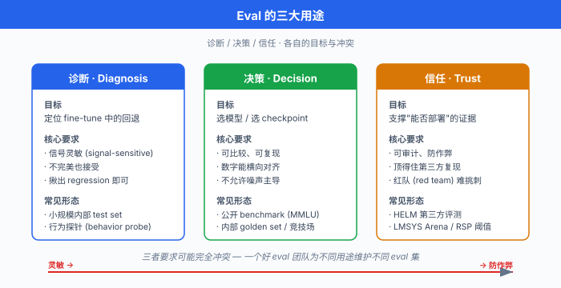
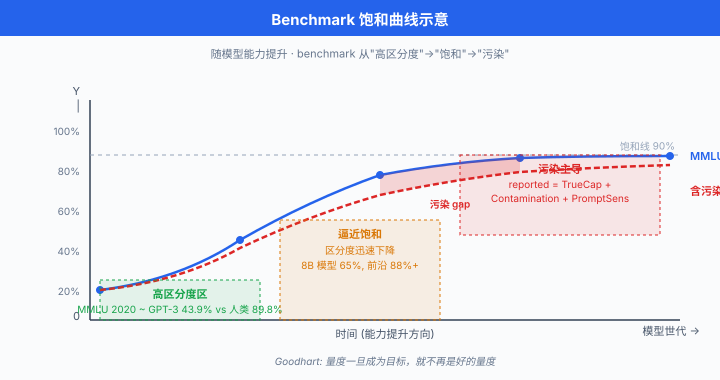

为什么 Eval 是 LLM 的圣杯¶
一句话总结：大语言模型的评测 (eval) 是训练之外最难、最主观、也最要命的一环 —— 它同时承担诊断、决策与信任三大职能，却在真值缺失、多维不可通约与 Goodhart 效应的三重夹击下，永远只能"逼近"而不能"完成".
🗺️ 本章导览¶
- 本章覆盖 LLM 评测方法学：从传统指标到现代 benchmark 到竞技场
- 01. 为什么 Eval 是 LLM 的圣杯 (本节)：三大用途、eval 难在哪、eval-driven development
- 02. 传统 NLP 指标: perplexity、BLEU、ROUGE、METEOR、CIDEr 与它们的局限
- 03. 现代 Benchmark 体系: MMLU、GSM8K、HumanEval、ARC、HellaSwag、BigBench、SWE-Bench
- 04. 竞技场与人类偏好: LMSYS Arena、ELO、MT-Bench、AlpacaEval
- 05. LLM-as-Judge: GPT-4 打分、reward model eval、偏差与去偏
- 06. Contamination 与 Benchmark 崩坏：数据污染检测、canary、动态 eval
- 07. 前沿方向：Capability & Safety Eval: HELM、Agent eval、dangerous capability
上一章讲完对齐、安全与可解释性，一个自然的问题跟上来：我们怎么知道自己"对齐"到了？怎么知道模型比昨天更"安全"? 答案永远绕不过 evaluation. 但 LLM 的 eval 与传统机器学习的评测截然不同 —— 它没有干净的验证集，没有唯一正确答案，甚至没有一个能压缩所有维度的单一指标。 这一节把这个"圣杯"式的问题摊开来讲.
- 想象一下，你花了 200 万美元、烧了三个月的 8000 张 H100 训完一个 70B 参数的 LLM. loss 曲线漂亮，tokens/sec 达标，checkpoint 都存好了。 老板问你一句："这个模型比上一版好吗?" —— 你怎么回答?
- 传统机器学习你可以回一句"验证集 accuracy 从 91.2 涨到 92.7". 但 LLM 呢？你想说"它现在写代码更好、聊天更自然、拒答更合理"，老板追问"证据呢"，你只能沉默。 因为没有一个数字能同时刻画这些维度；每一个 benchmark 都有污染疑云，每一个 human eval 都有标注员偏差，每一次内部主观测试都逃不过"我觉得挺好"这四个字的陷阱。
- 这就是本章要讲的痛点：evaluation 是 LLM 时代最大的科学债. 你训得再好，若没法证明"好"，一切都是空气。
Eval 的三大用途：诊断 · 决策 · 信任¶
-
在展开难度之前，先明确一件事：我们为什么做 eval? 主流用途可以归纳为三类，三者对 eval 的要求截然不同。
-
诊断 (Diagnosis)：用于训练与微调过程中的 debug. 比如 SFT (supervised fine-tuning，有监督微调) 阶段 loss 降下来了，但模型输出突然满口 emoji —— 你需要一个 eval 定位到"礼貌度过高、专业度过低"这种细颗粒问题。 诊断 eval 追求信号灵敏，哪怕不完美，只要能揪出回退 (regression) 就行。 常见形态：小规模内部 test set、单元测试式的行为探针 (behavior probe).
-
决策 (Decision)：用于选模型、选 checkpoint、选超参。 你训了 20 个 checkpoint，需要选一个上线；或者 GPT-4o 和 Claude Sonnet 之间为业务选一个。 决策 eval 追求可比较、可复现，数字必须能横向对齐。 常见形态：公开 benchmark (MMLU / GSM8K)、内部 golden set、竞技场对战。
-
信任 (Trust)：用于对外宣称能力时的证据。 论文的表格、发布会的 PPT、监管部门的合规报告 —— 这些数字影响的是是否可以部署、谁承担责任. 信任 eval 追求可审计、防作弊，必须能顶得住第三方复现和红队 (red team) 挑刺。 常见形态：权威第三方 benchmark (HELM)、独立评测机构 (LMSYS Chatbot Arena)、能力评估协议 (dangerous capability eval).
-
三类用途对同一个 eval 的要求可能完全冲突。 诊断希望灵敏，但灵敏往往意味着易被过拟合；决策希望可比，但公开 benchmark 一旦被广泛复用就必然污染；信任希望防作弊，但防作弊往往意味着题目不能公开，又和"可复现"打架。 一个好的 eval 团队，会为不同用途维护不同的 eval 集，而不是幻想用一个 eval 打天下.

为什么 LLM Eval 极难：五个根源¶
- 传统机器学习的 eval 之所以不难，是因为有干净的 ground truth. ImageNet 一张图的标签是"金毛犬"，就是"金毛犬"；情感分类"正面"就是"正面". accuracy、F1、AUC 拿来就能用。 但 LLM 打破了这个前提，至少在五个维度上。
根源一：Ground truth 缺失¶
- LLM 的核心用途是开放域生成. "帮我写一封辞职信"、"总结这篇论文"、"写一段 Rust 代码调用 gRPC" —— 这些任务的正确答案不唯一. 甚至"错误"都不好定义：一封辞职信可以委婉可以直接，委婉的更礼貌但可能被理解为不坚决，直接的更清晰但可能显得傲慢。 每个维度都是连续谱，不是离散标签。
- 形式化一点：设输入 \(x\)，输出 \(y\). 分类任务的评测是 \(\text{Acc} = \mathbb{E}_x [\mathbf{1}\{f(x) = y^\ast(x)\}]\)，其中 \(y^\ast\) 是唯一真值。 但 LLM 的评测本质上是 $\(\text{Score}(f) = \mathbb{E}_x \big[ Q(f(x), \mathcal{Y}^\ast(x)) \big]\)$
- 其中 \(\mathcal{Y}^\ast(x)\) 是可接受输出的集合 (一般无限大), \(Q\) 是一个质量函数，本身就得学出来 —— 而学出来的东西就必然有误差和偏见。 没有真值，就没有客观 accuracy.
根源二：多维不可通约¶
- 一个 LLM 的输出至少要在下面这些维度上同时被评估，而它们彼此独立、无法压缩成一个数. 先看偏"内容质量"的一组:
- 事实性 (factuality)：说的东西是不是真的，没有胡编。
- 流畅性 (fluency)：句子读起来顺不顺，有没有语法坑。
- 相关性 (relevance)：有没有答到用户真正问的那件事。
- 有用性 (helpfulness)：用户拿到回答后，问题是不是真的往前推进了。
-
推理力 (reasoning)：遇到多步骤问题时能不能一步步想清楚。
-
再看偏"行为对齐"的一组，这几维在部署时往往比"聪不聪明"更要命:
- 安全性 (safety / harmlessness)：会不会输出违法、危险、辱骂性的内容。
- 诚实性 (honesty)：不知道就说不知道，而不是一本正经地瞎说。
- 指令跟随度 (instruction following)：用户让"输出 3 条"，就真的输出 3 条，不多不少。
-
格式规范度 (format adherence)：让给 JSON 就给合法 JSON，让写 Markdown 就用正确语法。
-
一个具体的两难：模型 A 事实性 90 分、有用性 50 分；模型 B 事实性 70 分、有用性 85 分。 谁更好？答案取决于你的使用场景. 医疗问答显然选 A，头脑风暴助手可能选 B. 单一 leaderboard 排名，一旦把多维压缩成标量，就必然丢掉这种场景敏感的权衡。
根源三：上下文敏感¶
- 同一段用户输入，换一个 system prompt (系统提示词)，输出可能天差地别。 "You are a helpful assistant" 和 "You are a rigorous scientific reviewer" 会导致模型在同一道题上给出风格、篇幅、置信度截然不同的答案。
- 更麻烦的是：eval 的分数强依赖于 prompt 模板. Hendrycks 等人 (2020) 的 MMLU (大规模多任务语言理解，Massive Multitask Language Understanding, MMLU) 论文里，同一模型换一种 prompt 格式，分数可以差 5-10 个百分点。 Liang 等人 (2022) 的 HELM 报告干脆把 prompt 变体本身作为一个测评维度，报告"平均 + 方差". 不控制 prompt，你测的就不是模型能力，是模型 + prompt 的组合能力.
根源四：分布外泛化 (Out-of-Distribution, OOD)¶
- Benchmark 是一批特定分布的样本。 MMLU 是选择题、GSM8K 是小学数学、HumanEval 是 Python 函数补全。 但真实用户的 query 分布根本不长这样 —— 现实里有一半 query 是"帮我改一下这段没写完的代码"、"这篇邮件回得客气点"这种半上下文、半闲聊的场景。
- 一个模型在 MMLU 上 90 分，上线后用户吐槽"废话多、不听指令、瞎编事实". 这不是矛盾，这是benchmark 分布 ≠ 使用分布的必然结果。 用一句更狠的话：公开 benchmark 是"考试成绩"，真实用户是"实习工作表现"，两者相关但远非同一件事.
根源五：评测者偏差¶
- 主观 eval (人类打分或 LLM-as-judge) 会被评测者本身的属性污染。 人类标注员有:
- 教育背景偏差：母语英语的博士生 vs 众包平台的普通标注员，对"专业性"的打分尺度不同。
- 疲劳偏差：连续标 500 条后，打分方差显著变大 (Kahneman et al., 2021 的 Noise 一书专门讲这个现象).
- 文化偏差：同一段回答，美国标注员觉得"太啰嗦"，中国标注员可能觉得"够详细".
- 顺序偏差：先看到的选项打分更高 (primacy bias)，或最后看到的更高 (recency bias)，取决于任务设计。
- 用 LLM 当 judge (下一章展开) 更糟糕：LLM 有位置偏差 (position bias，更青睐第一个选项)、长度偏差 (length bias，更青睐长回答)、自我偏好偏差 (self-preference bias, GPT-4 判 GPT-4 更宽松) 等一整套系统性 bug. 评测者本身就是一个有偏、有噪声的信道.
Eval-Driven Development：借 TDD 的东风¶
-
面对上面五个根源，有没有系统性的开发范式？Anthropic 的实践给出了一个漂亮的答案：Eval 驱动开发 (Eval-Driven Development)，直接类比软件工程的测试驱动开发 (Test-Driven Development, TDD).
-
TDD 的核心是先写测试，再写代码. 测试是"意图的可执行说明书"，强迫程序员在动键盘前想清楚要做什么。 Eval-Driven Development 把这个哲学搬到 LLM:
- 先定义 eval，再训模型. 想让模型学"更礼貌"? 先构建一个能量化"礼貌度"的 eval 集。 想让模型学"少幻觉"? 先构建一个 hallucination 检测集。 没有 eval 的能力目标，就是空想.
- 每次改动都过一遍 eval 套件. SFT 换了数据分布 → 跑一次 eval; RLHF 调了 reward model → 跑一次 eval；后处理加了个 guardrail (护栏) → 跑一次 eval. 任何回退立刻发现，而不是等用户反馈。
-
Eval 和模型能力协同进化. 模型越强，老 eval 越会饱和 (saturate) 失去区分度，就要设计更难的 eval. Anthropic 内部有一句话："eval 团队应该是能追得上研究团队的最强人才".
-
对比只跟 loss 训的传统范式:
| 维度 | Loss 驱动 | Eval 驱动 |
|---|---|---|
| 目标 | 最小化 \(\mathcal{L}(\theta)\) | 最大化下游 eval 分数 |
| 信号频率 | 每 step 都有 | 每 checkpoint / 每次实验 |
| 语义颗粒度 | 单一标量 | 多维分数，可拆分 |
| 分布匹配 | 训练集分布 | 使用场景分布 |
| 主要风险 | 过拟合训练集 | eval 集本身污染或狭窄 |
- 形式化对比。 传统训练是求 $\(\theta^\ast = \arg\min_\theta \mathcal{L}_\text{train}(\theta)\)$
- Eval 驱动则是求 $\(\theta^\ast = \arg\max_\theta \sum_{i=1}^{K} w_i \cdot \text{Eval}_i(\theta), \quad \text{s.t. } \mathcal{L}_\text{train}(\theta) < \tau\)$
-
这里 \(K\) 个 eval \(\text{Eval}_i\) 是多目标向量，\(w_i\) 是场景权重。 train loss 从目标降级成约束 —— 只要 loss 别爆炸就行，真正决定"好"的是 eval. 这是 LLM 后训练时代与预训练时代的方法论分水岭。
-
但要警告一句：eval 驱动开发也会掉进自己的陷阱，就是 Goodhart's Law 在 eval 上的显现 —— 一旦某个 benchmark 被公开且被广泛用作决策依据，它就会成为优化目标，从而失去作为"良好度量"的资格。 这个我们下面会展开。
主观 vs 客观 Eval 的谱系¶
- LLM eval 的另一个关键分类是主观-客观谱系. 别用二分法，用谱系:
客观 ─────────────────────────────────────────────── 主观
│ │ │ │
[有唯一真值] [半可执行验证] [多参考答案] [纯人类判断]
MMLU HumanEval BLEU/ROUGE 对话质量
GSM8K SWE-Bench summarization helpfulness
ARC competitive-prog creativity
- 左端 (客观)：有唯一真值或可执行验证。 MMLU 选 A/B/C/D，一目了然；HumanEval 跑 unit test，通过就是通过，不通过就是不通过。 优点是完全可复现，缺点是远离真实用户价值 —— 用户不会问你 "3.14 的平方根乘以 2 是多少"，他会问 "帮我把这段代码重构得更清晰".
- 中段 (半主观)：有参考答案但接受多种形式。 BLEU 比对翻译输出与人工参考，允许一定程度的表达差异；summarization 有多个可接受摘要。 这类 eval 靠 n-gram 匹配等启发式，已经广受质疑 (下一节详细展开为什么).
-
右端 (主观)：只能靠人类或 LLM 打分。 对话质量、创造力、共情能力、指令跟随度 —— 这些没有客观真值，只有"合格的读者觉得如何". LMSYS Chatbot Arena、MT-Bench 都在这一端。
-
一个关键排序：越靠右 (越主观)，越贴近真实价值；越靠左 (越客观)，越好复现。 你选 eval 时，要在信号真实性和信号可复现性之间权衡。 只跑右端你没法给出可信数字，只跑左端你测的可能不是用户在乎的东西。 正确做法：左中右各取几个，交叉验证.
Goodhart 在 Eval 上的显现¶
- 回到上一章的 Goodhart's Law: "任何量度一旦成为目标，就不再是好的量度". 在 LLM eval 领域，这条定律显现为一个尖锐现象：benchmark 一红就成为优化目标，然后失去区分度.
- 具体路径：一个 benchmark 发布 → 论文里被引用，变成公认 baseline → 各家厂商公开自己的分数 → 训练数据里出现 benchmark 及其变体 (数据污染，contamination) → 模型分数虚高 → benchmark 失去区分能力。
- 举个例子：MMLU 2020 年发布时，GPT-3 (175B) 只有 43.9%，明显低于人类专家的 89.8%，区分度极佳。 到 2024 年，主流开源 8B 模型都能到 65+%，前沿模型 88%+，已经逼近饱和. 这时候你再报 MMLU 分数，90.1 和 89.7 的差别可能纯属噪声。
- 更棘手的是数据污染 (contamination). 一个模型的训练数据里如果混进了 MMLU 测试集 (哪怕是 web crawl 意外抓到)，分数就会虚高。 检测污染的方法 (canary string、n-gram 匹配、成员推断) 我们放到本章第 06 节。 这里先记住一个数学直觉: $\(\text{Reported}(\text{model}) \; = \; \underbrace{\text{TrueCapability}}_{\text{我们想测的}} + \underbrace{\text{Contamination}}_{\text{意外记忆}} + \underbrace{\text{PromptSensitivity}}_{\text{格式运气}} + \epsilon\)$
- 三个附加项都是正贡献，都会推高分数。 一个漂亮的分数不再是"能力强"的充分证据 —— 只是"能力 + 污染 + 提示词技巧"的加总。
- 从信息论角度：一个 benchmark 承载的信息量有上限 (它就那么些道题). 优化压力越大，你越是从 benchmark 里榨取每一比特信息 —— 但多余的优化压力只能过拟合 benchmark 特定分布，不再转化为真实能力提升。 Goodhart 的信息论边界在这里同样成立。

Eval 与 Alignment 的联系¶
- 上一章讲对齐，这一章讲 eval，二者是同一枚硬币的两面。 让我们回到那个 \(U_\text{human}\) (人类真实效用) 与 \(\hat r\) (代理奖励) 的分裂:
- 训练时，我们用 \(\hat r\) 去逼近 \(U_\text{human}\).
- 评测时，我们用 \(\text{Eval}\) 去逼近 \(U_\text{human}\).
- 换句话说，eval 就是 alignment 的另一种代理. 它同样受 Goodhart's Law 摧残，同样无法完整表达人类真值，同样在优化压力下暴露漏洞。
- 但 eval 有一个 alignment 没有的独特作用：它是部署决策的看门人. 如果一个模型在 dangerous capability eval (前沿能力评估，见本章 07 节) 上表现异常，就应该延迟发布或加护栏。 Anthropic 的 Responsible Scaling Policy (RSP, 2023) 明确把 eval 分数与部署门槛绑定 —— eval 从"科学度量"升级成了"治理机制".
- 好的 eval 是 alignment 的最佳外部信号. 想知道模型是否 sycophantic (拍马屁)? 构建一个 sycophancy eval (Perez et al., 2022 的 model-written eval 就是这么干的). 想知道模型是否 deceptive (欺骗)? 构建可控的欺骗性 eval. 每一个 alignment 关切，最终都要落到一个 eval 上. 不能被 eval 度量的 alignment 目标，相当于不存在。
中文圈的 Eval 生态：C-Eval / SuperCLUE / OpenCompass¶
- 中文 LLM 圈的 eval 生态在 2023-2024 迅速成型，主要参考几个坐标:
- C-Eval (上海交通大学 + 清华大学等，2023)：覆盖 52 学科的中文选择题 benchmark，类似 MMLU 的中文对应物。 包含 STEM、人文、社会科学、其他 (Other) 四大类，从初中到博士级别。 一度是国内厂商发布通用能力的必报指标。
- SuperCLUE (CLUE 团队，2023)：综合中文能力评测，涵盖对话、推理、代码、安全等多维度。 每季度发布 leaderboard，影响国内厂商定位。
- OpenCompass (上海 AI 实验室，2023)：更像一个 eval 平台而非单一 benchmark，集成了 100+ 数据集与统一评测协议。 官方支持中英文，是国内最接近 HELM 的开源框架。
- 但中文圈的 eval 也在遭遇同样的 Goodhart 危机. 2023 年就有多起争议：某厂商 C-Eval 分数比 GPT-4 高 15 个百分点，但同一模型在开放式 chat 上表现明显更弱，被外界质疑训练数据污染或模式匹配。 一个健康的 eval 生态需要独立第三方与动态 eval，而不是"厂商自己发榜自己刷".
- 另一个中文圈特有的挑战：文化本地化. 一道 MMLU 里的美国宪法题直译成中文，对中国用户几乎无意义。 简单的翻译 benchmark 会引入"翻译质量偏差"，让模型分数与真实中文能力脱节。 好的中文 eval 应该有原生构建的题目 (C-Eval 的行业知识部分就是这么做的)，而不是全靠翻译。
代码实验一：最简 Eval Loop 骨架¶
- 让我们看一个 eval loop 的骨架代码。 目的是感受"eval 不是黑魔法"，就是批量 inference + 批量打分.
from typing import Callable, List, Dict, Any
import statistics
def run_eval(
model_fn: Callable[[str], str],
dataset: List[Dict[str, Any]],
scorer: Callable[[str, Dict[str, Any]], float],
name: str = "unnamed_eval",
) -> Dict[str, float]:
"""
通用 eval loop.
- model_fn: 一个 prompt -> completion 的函数
- dataset: 每条 sample 至少有 'input' (prompt) 与打分需要的字段
- scorer: 打分函数, 输入 (completion, sample) 返回 [0, 1] 分数
"""
scores = []
per_sample = []
for i, sample in enumerate(dataset):
prompt = sample["input"]
# 关键: 固定 system prompt 与温度, 保证 eval 可复现
completion = model_fn(prompt)
s = scorer(completion, sample)
scores.append(s)
per_sample.append({"idx": i, "score": s, "completion": completion})
return {
"name": name,
"n": len(scores),
"mean": statistics.mean(scores),
# 报告方差是 eval 的最低职业道德; 无方差的均值是耍流氓
"stdev": statistics.stdev(scores) if len(scores) > 1 else 0.0,
# 保留 per-sample 明细, 用于 error analysis
"samples": per_sample,
}
# 玩具例子: 简单 exact-match scorer
def exact_match(completion: str, sample: Dict[str, Any]) -> float:
return 1.0 if completion.strip() == sample["reference"].strip() else 0.0
# 假设有一个 model_fn
def fake_model(prompt: str) -> str:
return "42" # 一个只会说 42 的模型
toy_dataset = [
{"input": "生命的答案是?", "reference": "42"},
{"input": "1+1=?", "reference": "2"},
]
result = run_eval(fake_model, toy_dataset, exact_match, name="toy_em")
print(f"Eval: {result['name']}, n={result['n']}, "
f"mean={result['mean']:.3f}, stdev={result['stdev']:.3f}")
# 输出: Eval: toy_em, n=2, mean=0.500, stdev=0.707
- 这段代码只有 30 行，但抓住了 eval 的四要素: (1) 数据集，(2) 模型调用，(3) 打分器，(4) 统计汇报 (均值 + 方差). 现代 eval 框架 (LM-Eval-Harness、HELM、OpenCompass) 都是把这四要素工程化并追加 prompt 模板管理、批量并行、缓存与结果溯源。
- 重要提醒：单一均值分数是不够的. 一个 eval 至少要报告均值 + 方差 + n. 更好一点报告 bootstrap 置信区间。 看到只有一个数字的 leaderboard，直接怀疑.
代码实验二：Benchmark JSON 结构示例¶
- 现代 benchmark 通常以 JSON 或 JSONL 存储，每条样本至少包含：input、reference (若有)、metadata (如学科、难度). 下面是一个 MMLU-style 样本的结构参考:
mmlu_sample = {
"id": "mmlu_high_school_math_001",
"input": (
"The following are multiple choice questions about high school mathematics.\n\n"
"Question: If f(x) = 2x + 3, what is f(5)?\n"
"A) 10\n"
"B) 13\n"
"C) 15\n"
"D) 8\n"
"Answer:"
),
"reference": "B",
"choices": ["A", "B", "C", "D"],
"metadata": {
"subject": "high_school_math",
"difficulty": "easy",
"source": "mmlu-v1",
# canary string 用于污染检测, 见第 06 节
"canary": "UUID-canary-4c2b1a8e"
}
}
# 一个 benchmark 的完整 schema 建议至少包含:
benchmark_schema = {
"name": "MMLU",
"version": "1.0",
"n_samples": 14042,
"prompt_template": "The following are multiple choice questions about {subject}...",
"eval_config": {
"temperature": 0.0, # 客观 eval 一律用贪心
"max_tokens": 5,
"stop_sequences": ["\n\n"],
},
"scorer": "letter_choice_exact_match", # 打分器标识
"metrics_reported": ["mean", "per_subject", "stdev_over_prompts"],
"known_issues": ["contamination_in_common_crawl", "prompt_sensitivity"],
}
- 这个 schema 强调三件事：prompt 模板必须写下来 (否则不可复现)、eval config 必须固定 (温度、max tokens、停止符都会影响结果)、已知问题必须公开 (让读数字的人有心理准备). 这是"负责任 eval"的基础格式。
心法：给读者的 Eval 三条原则¶
-
讲了这么多难点，最后给读者三条务实的原则，走 LLM eval 时贴在墙上:
-
原则一：别相信任何单一分数. 一个模型 MMLU 90 分，只能告诉你它擅长做 MMLU 那种题。 至少同时看 3-5 个正交 eval (推理 / 代码 / 安全 / 对话 / 长文本)，加上人工抽检 20-50 条。 单一数字漂亮不代表整体好。
-
原则二：Track 分数变化的方向，而非绝对值. 你在 MMLU 上从 65 涨到 68，是你自己的模型对比自己的进步信号，值得信。 但你的 68 vs 别人的 71，差异可能来自 prompt 模板、few-shot 数量、温度设置 —— 横向比较不可轻信. 纵向 (自己对比自己) 的方向性信号远比绝对值靠谱。
-
原则三：建立自己的 golden set. 公开 benchmark 会污染，leaderboard 会饱和，但你自己维护的、封闭的、面向业务的 golden set 是核弹级资产. 200 条精心构建的业务样本 + 明确打分标准，比 20000 条公开 benchmark 更能保护你的产品决策。 Anthropic、OpenAI 内部都有大量 golden set 从不公开，就是这个道理。
本章后续路线图¶
- 铺垫完基础，我们在剩下的 6 节里逐步深入:
- 第 02 节 回到传统 NLP 指标 —— perplexity、BLEU、ROUGE 这些前 LLM 时代的老兵，弄清它们为什么在 LLM 时代不够用，但为什么依然要懂。
- 第 03 节 现代 benchmark 巨型体系 —— MMLU、GSM8K、HumanEval、SWE-Bench、BigBench 一次讲透，附带每个 benchmark 的污染现状.
- 第 04 节 竞技场与人类偏好 —— LMSYS Chatbot Arena、MT-Bench、AlpacaEval 与 ELO 数学。
- 第 05 节 LLM-as-Judge —— 用 GPT-4 判 GPT-4 的方法论、系统性偏差与去偏技术。
- 第 06 节 Contamination 与 Benchmark 崩坏 —— 检测方法、canary 机制、动态 eval 的新范式。
-
第 07 节 前沿方向 —— HELM 的整体协议、Agent eval、dangerous capability eval，与治理挂钩。
-
读完全章，你应该能回答老板那个刁钻问题："这个模型比上一版好吗?" —— 不是给出一个数字，而是给出一份多维度、报方差、标污染、附抽检的 eval 报告。 那份报告的每一项分数背后，都有本章某一节讲过的方法论支撑。
📌 本节要点¶
- Eval 三大用途：诊断 (debug 训练)、决策 (选模型/checkpoint)、信任 (对外证据)；三者对 eval 的要求相互冲突，应分别维护不同 eval 集。
- LLM eval 极难的五个根源: ground truth 缺失、多维不可通约、上下文/prompt 敏感、分布外泛化、评测者本身有偏。
- Eval-Driven Development：类比 TDD，先定义 eval 再训模型，把 loss 从"目标"降级为"约束"，真正的目标是多维 eval 加权和。
- 主观-客观谱系：从 MMLU (客观唯一真值) 到 HumanEval (可执行验证) 到 BLEU (多参考) 到人类打分 (纯主观)；越主观越贴近价值，越客观越好复现，必须交叉使用。
- Goodhart 在 eval 上的显现：公开 benchmark 会被优化为目标，走向饱和 + 污染；漂亮分数 = 真能力 + 意外记忆 + 提示词技巧，三者难以拆分。
- Eval 与 Alignment 的关系: eval 是 alignment 的另一种代理，也是部署决策的看门人 (Anthropic RSP 把 eval 分数与发布门槛绑定).
- 中文圈 eval 生态: C-Eval / SuperCLUE / OpenCompass 是三大坐标；面临同样的 Goodhart 危机，且需应对文化本地化挑战。
- 三条实践原则：别信单一分数、track 方向而非绝对值、建立自己的封闭 golden set.
参考文献¶
- Hendrycks, D., Burns, C., Basart, S., Zou, A., Mazeika, M., Song, D., & Steinhardt, J. (2020). Measuring Massive Multitask Language Understanding. arXiv:2009.03300. (MMLU 原始论文.)
- Liang, P. et al. (2022). Holistic Evaluation of Language Models (HELM). arXiv:2211.09110. (系统性 eval 协议的标杆论文.)
- Chiang, W.-L., Zheng, L., Sheng, Y., Angelopoulos, A. N., Li, T., Li, D., Zhang, H., Zhu, B., Jordan, M. I., Gonzalez, J. E., & Stoica, I. (2024). Chatbot Arena: An Open Platform for Evaluating LLMs by Human Preference. arXiv:2403.04132.
- Zheng, L. et al. (2023). Judging LLM-as-a-Judge with MT-Bench and Chatbot Arena. NeurIPS 2023 Datasets and Benchmarks Track. arXiv:2306.05685.
- Perez, E. et al. (2022). Discovering Language Model Behaviors with Model-Written Evaluations. arXiv:2212.09251. (model-written eval 与 sycophancy 系统测量.)
- Anthropic (2023). Anthropic's Responsible Scaling Policy (RSP). (把 dangerous capability eval 与部署门槛绑定的治理框架.)
- Kaplan, J. et al. (2020). Scaling Laws for Neural Language Models. arXiv:2001.08361. (Loss 视角的"越大越好"；与 eval 视角的差异构成本章张力.)
- Huang, Y. et al. (2023). C-Eval: A Multi-Level Multi-Discipline Chinese Evaluation Suite for Foundation Models. arXiv:2305.08322.
- Kahneman, D., Sibony, O., & Sunstein, C. R. (2021). Noise: A Flaw in Human Judgment. Little, Brown Spark. (人类判断噪声的系统研究，与人工 eval 直接相关.)